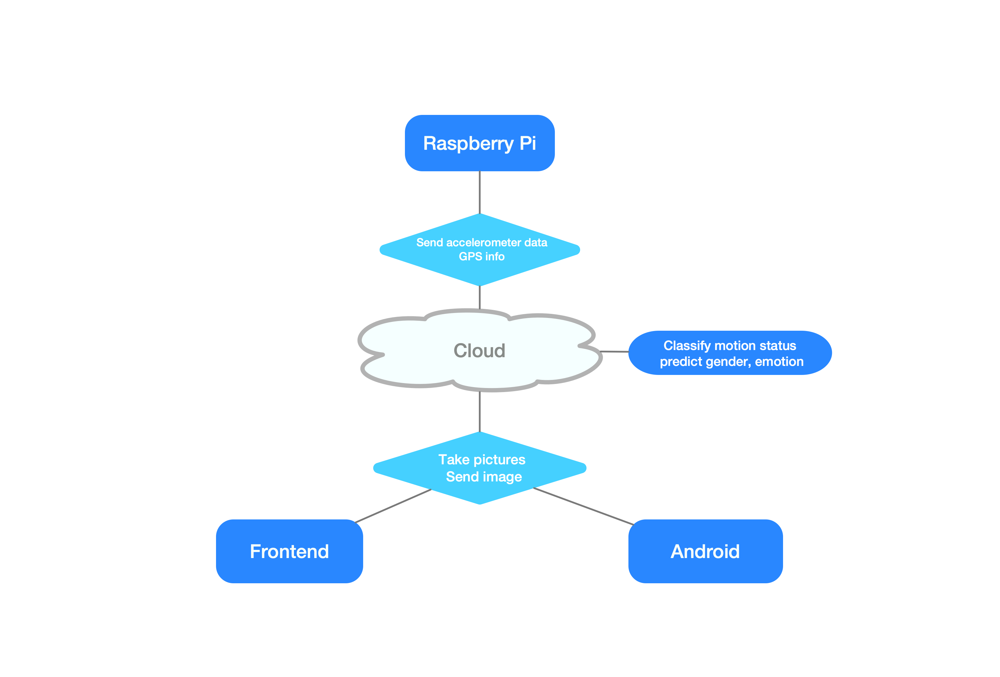

Sonny Monitor
Sonny Monitor is and IoT solution originally designed for elder care. It aims to help their children ensure elders' safety. After some improvement on the front end. Sonny Monitor can also be used as a game to play.
We introduce the Sonny Monitor ,a portable real time montion and emotion montoring device. This project is a solution for helping the young, the elder, and the disadvantaged. It is dedicated to help recording both phscially and mentally health of users storing emotions and activities for later analysis. Our Sonny Monitor is designed to be a small, light meanwhile very power and accurate sensor device. Anyone who uses Sonny Monitor can have their daily activaties easily recorded and can be viewed on the android app. On the other hand, it can be easly attached to children and elder, helping us get to know their physical and spiritual conditions during the day.
Motivation
Never can people get to know each other well espcially for those who needed help. People who stay at home after retried, who are too young to speak out are requiring attention and care for both of their mentally and phscially health. Our design can help people to take care of those people and get to know their status even if they are not at home. Everything people need to know are included and sent by our device. Not like anyhting among market or app store, our device provide a solution for a small, light and cheap option for real time motion, emotion and location recroding.
System
Remember to use combination of descriptions, photos, and figures
Architecture
Technical Components
Technical Components The embedded system works as a online server in our project. Upon start up, it will automatically start up the jupyter notebook server as well as the recording program. Several modules are built on this board, one of which is a pedometer module. The pedometer module take the acceleration from 3 dimensions as input. The raspberry pi will send those recorded data to AWS lambda function where we installed a classifier producing motion status which is read by user end. This design provides the real time motion monitoring. On the other hand, a GPS module is installed on raspberry providing geographical location of the user who is carrying our device. Having the ability to take a quick snapshot of clients, our device is able to send pictures of faces to the EC2 server. The pictures are first processed by the OpenCV's Haar Cascade Classifier to draw a bounding box around each faces in the picture. Then the bounded face is send to two trained classifiers in keras library. One of which is IMDB gender classifier and the other one is er2013 emotion classifier for both gender and emotion classification.
Prototype
Our prototype is as following: 
Our Team
Zhi Ji
Zhi Ji comes from Beijing, China and is currently pursuing a Masters in Electrical Engineering at Columbia. He was previously studying at UESTC and UC Berkeley , worked at Berkeley Video and Image Processing lab and Chinese Academy of Science and have many experiences in Deep Learning and Web and mobile development. He has a host of passion on working for building a product and is looking for internship for 2019 summer.
Contact
Zhi Ji: zj2242@columbia.edu
Zhicheng Wu: email here
Boyuan Sun: other contact info
Columbia University Department of Electrical Engineering
Instructor: Professsor Xiaofan (Fred) Jiang